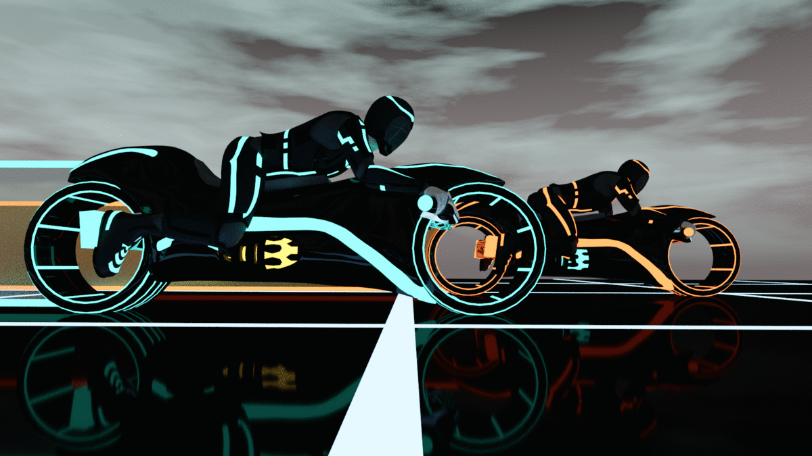
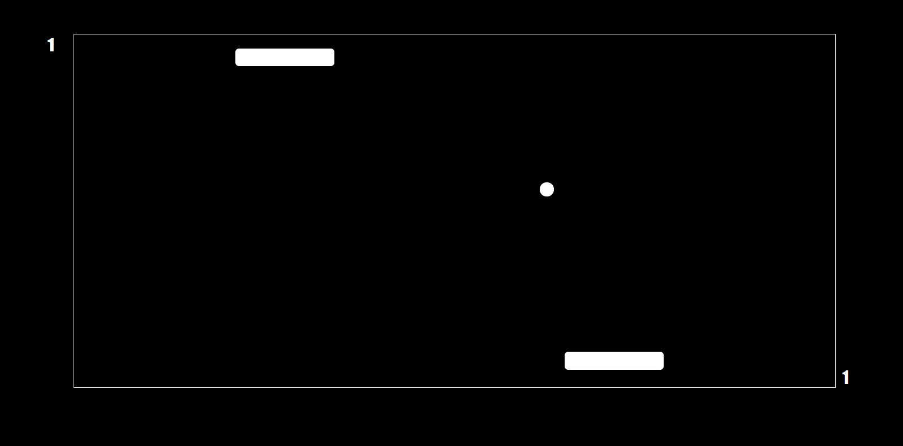
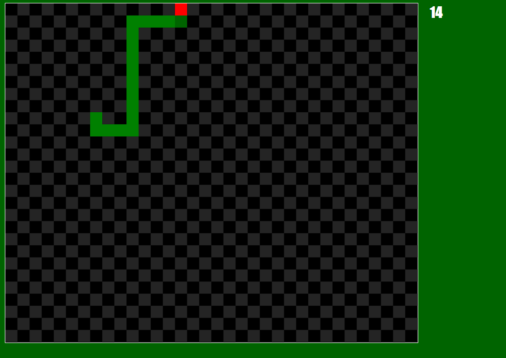
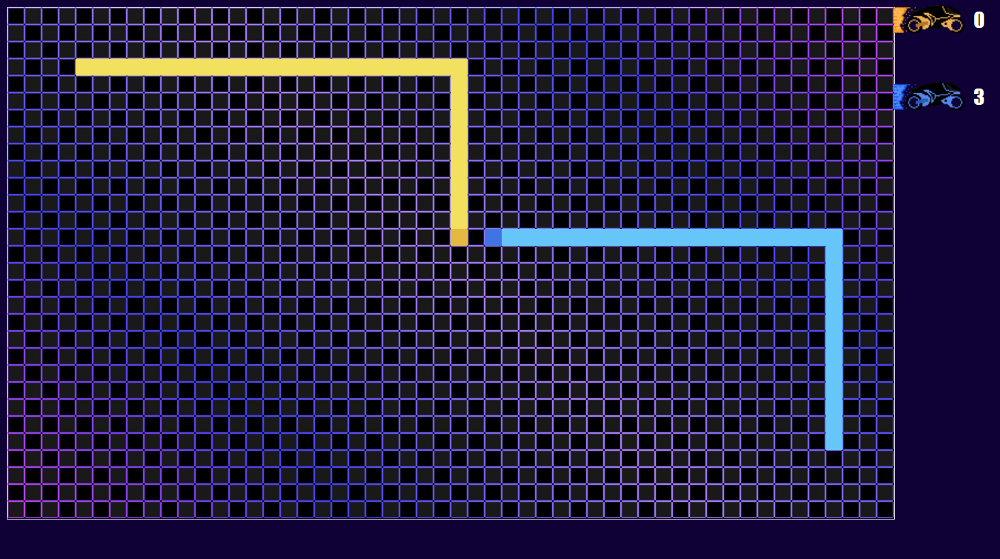
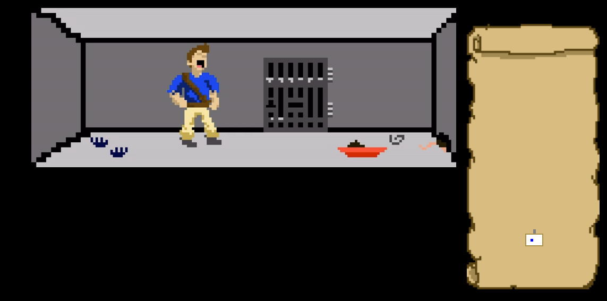
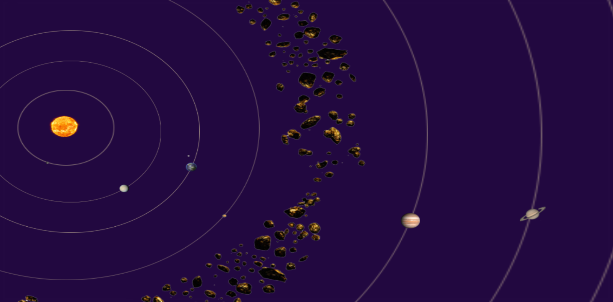
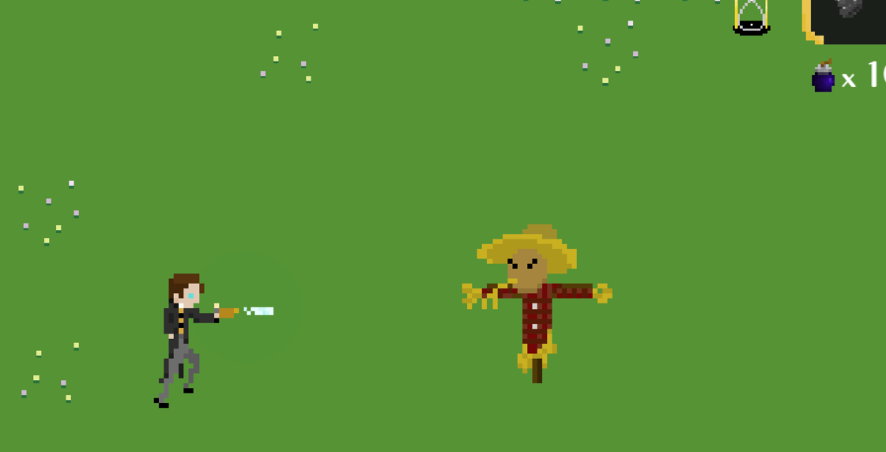

Tsar-Dev-Collective
Published Works:
Active Projects:

Classics:
  
*each of these games have no monetization nor ads, and are not of my own design, just my own code and simple graphics
Abandoned Works:
  
______________________________________________________
Who Are We?
Tsar-Dev is a small group of people who, above all else, just want to make things that they can share with others. The Group was created merely as a means of turning our hobbies into our passions and giving us a solid name to put on our work so as to boost each other up with each successful project, and grow a brand for ourselves large enough that any one of our members' small ideas could become a project known 'round the world in no time. In the midst of the pandemic in 2020, three of us started Tsar-Dev as a name for us to work under on a project that was to be entered into a programming competition. That project would be named, "Solaris Schema" and did actually win our branch of that competition. Ecouraged by our success and our teacher at the time, we embarked on the next project, "Wardenclyffe". Which unfortunately never made it past the hurdles of development and remains online as a testing grounds. Sadly, after months of inactivity, one of the founding three dropped communication without a word. We miss him, but I'd like to think that the grouphas only grown stronger since and settled down into more achievable projects for such a small number of people. So, although many of our older projects, including my own personal work that was absorbed into the name, will never see the light of day, one day soon you'll be able to see our name on games and sites bigger and better than anything we could even dream of at current.